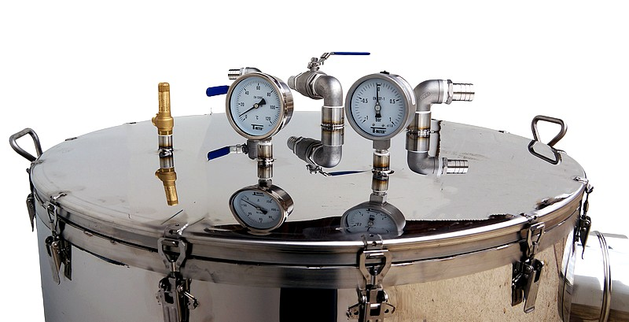

Description
Le système de cuve chauffante a été conçu pour maintenir une température constante dans une cuve industrielle.
Détails Techniques
- Utilisation de sondes PT100 pour la mesure de température.
- Contrôle PID pour une régulation précise.
- Interface utilisateur pour la configuration des paramètres.